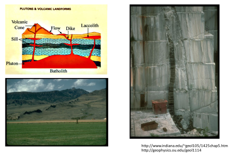
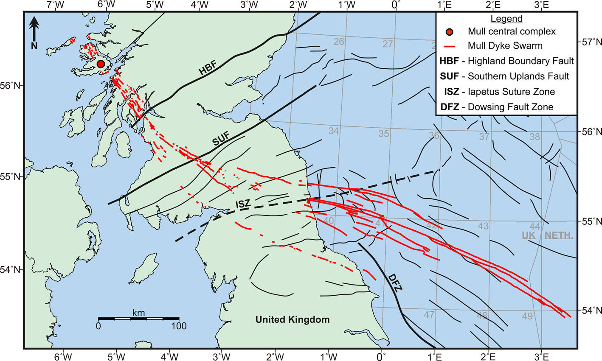
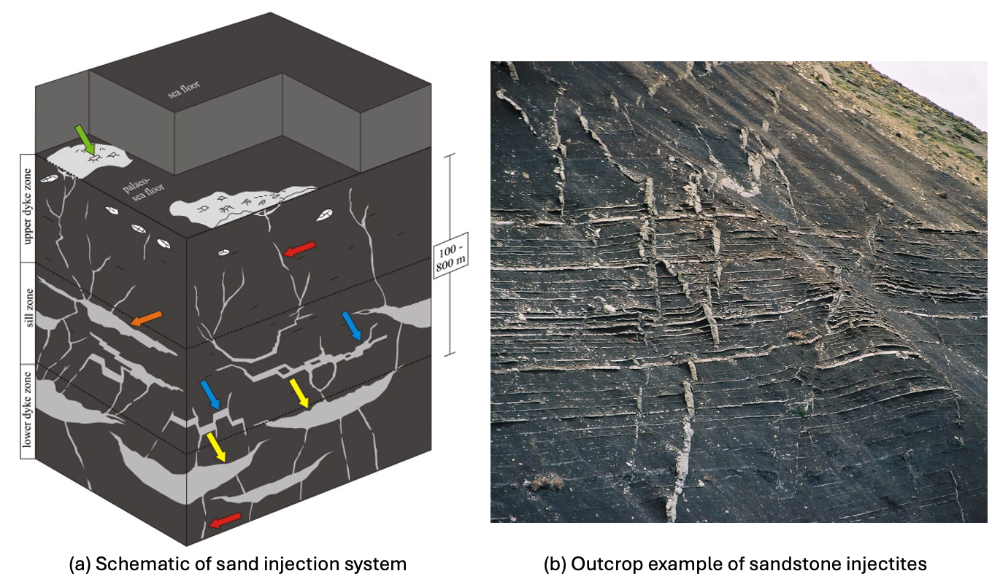
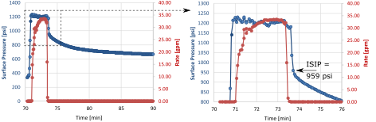
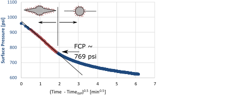
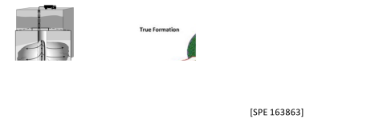
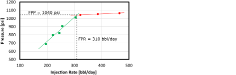
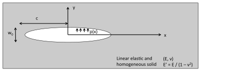
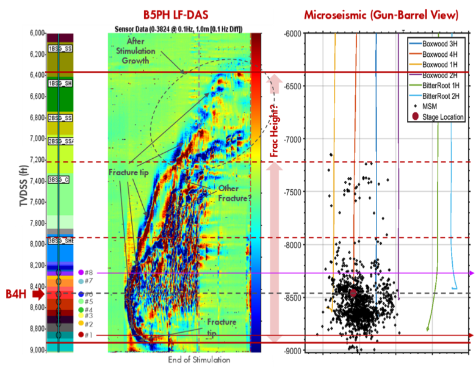
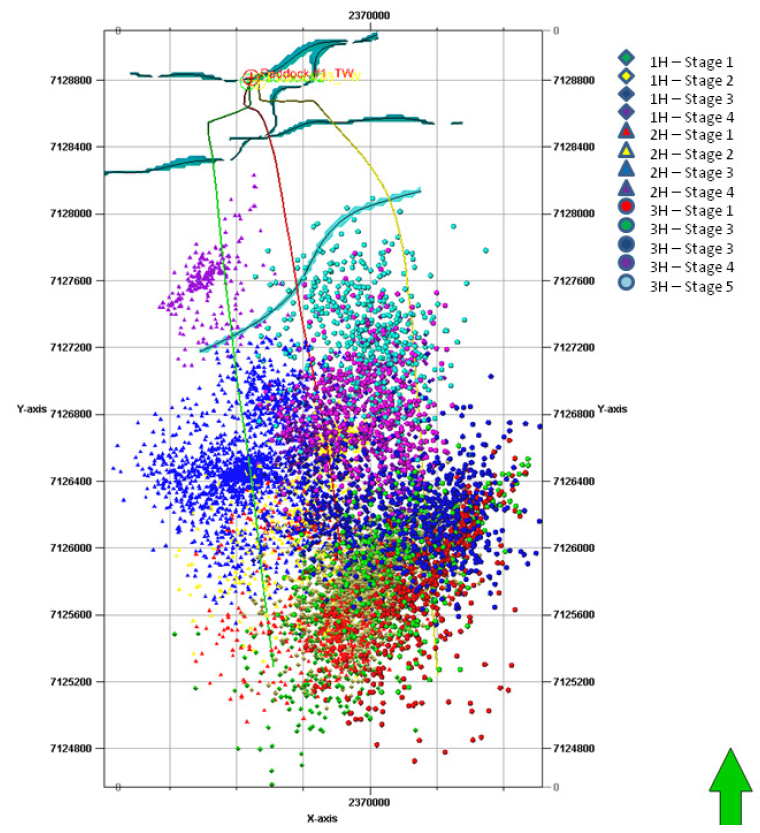

Next: 8. Reservoir depletion and injection Up: Introduction to Energy Geomechanics Previous: 6. Wellbore Stability Contents
This chapter reviews the initiation and growth of fluid-driven fractures, commonly known in practice as “hydraulic fractures”. The propagation of fluid-driven fractures depends on the properties of the porous medium where the fracture propagates, the properties of the injected fluid, and the in-situ stresses. Hydraulic fractures tend to open up as planes perpendicular to the minimum principal stress in order to minimize required work to open. Open-mode fluid-driven fractures happen naturally in the subsurface, may occur accidentally during wellbore drilling, and help improve reservoir connectivity to the wellbore when used for completion purposes.
Hydraulic fractures are common in the subsurface and occur naturally when a fluidized material overcomes the list principal stress and required fracture propagation energy. “Fluidized materials” include typical pore fluids such as water, gases and hydrocarbons and also magma and fluidized muds. Naturally occuring hydraulic fractures with fluids may not remain open or propped and are difficult to identify in nature unless mineral precipitation makes them evident.
Magmatic dykes/dikes form when pressurized magma overcomes the minimum principal stress in the subsurface. Dykes form large vertical planes in places with marked stress anisotropy with . Figure 7.1 shows examples of dykes as observed on surface and in mines. Magmatic dykes tend to be easy to identify near surface because magma hardens in place and igneous rocks are hard to weather with time. In fact, magmatic dykes occur frequently near divergent boundaries and zones with thin crust. Recently, dykes have been monitored through seismic activity in Iceland (Figure 7.2): the monitored horizontal propagation velocity was about 200 m/hr. Igneous dykes can cut through oil and gas basins, and regions target of carbon dioxide and hydrogen storage. Figure 7.3 shows an example of a map of dyke swarms in the North Sea. Some of these dykes are hundreds-of-kilometers long and act as seals for natural accumulations of oil and gas in the North Sea.
 |
 |
 |
Sedimentary dykes and pipes occur when fluidized sediments create fluid driven fractures or conduits. Fluidization happens when water/gas pressure is so high that effective stress goes to zero and the sediment loses frictional strength. These sediment intrusions into upper strata are usually termed injectites when planar or mud volcanoes when predominantly one-dimensional. Figure 7.4 shows an example of interpreted sediment injectites cutting through low permeability formations and an example from the field.
 |
Understanding of hydraulic fractures is important for several applications in petroleum and geosystems engineering, from drilling and completion to enhanced oil recovery. The following field tests involve hydraulic fracturing and are suitable for specific applications.
The leak-off test is conducted to measure the fracture gradient required for setting maximum mud pressure for drilling. The test is conducted with drilling mud after cementing the casing of the previous section in an open-hole.
Execution of the leak-off test involves the following events:
Figure 7.6 shows an example of a leak-off test using another notation for the leak-off point and breakdown pressure. Some studies suggest that a deviation from linearity at the beggining of the test indicates the opening of a small fracture (FIP) until it reaches a maximum pressure (UFP) after which it propagates at a rate faster than the injected fluid. An “extended” leak-off test requires to reach the UFP (or FPP) pressure. Sometimes the leak-off tests may be stopped before UFP to avoid large fractures in the well.
![\includegraphics[scale=0.65]{.././Figures/split/9A-12.pdf}](img1060.svg) |
The shut-in pressure is the maximum pressure before the pressure signature exhibits a gradual decay as a function of time due to shutting the pumps.
 |
While the fracture is still open in an uncased borehole, fluids in the fracture leak off from both the wellbore and the fracture.
Large leak-off surface (fracture walls and well) causes a rapid pressure decrease approximately proportional to the
 (where
(where  is the time after shut-in).
The pressure decrease rate slows down once the fracture closes (leak-off just from well) and departs from the vs.
linear trend. The fracture closure pressure (FCP) is the pressure at which this change in leak-off regime occurs (See example in Fig. 7.8).
Fracture closure is interpreted to be approximately equal to the minimum principal total stress .
is the time after shut-in).
The pressure decrease rate slows down once the fracture closes (leak-off just from well) and departs from the vs.
linear trend. The fracture closure pressure (FCP) is the pressure at which this change in leak-off regime occurs (See example in Fig. 7.8).
Fracture closure is interpreted to be approximately equal to the minimum principal total stress .
 |
The objectives of the DFIT test are to determine permeability, determine pore pressure, and determine minimum principal stress .
The DFIT test is usually done in tight low-permeability reservoirs for completion purposes before a large hydraulic fracture treatment.
The test involves small wellbore intervals using relatively small fracturing fluid injection volumes
bbl.
The injection rates are also relatively small ranging from  0.1 to 3 bbl/min.
The DFIT test may be performed through perforations in already cased boreholes.
0.1 to 3 bbl/min.
The DFIT test may be performed through perforations in already cased boreholes.
 |
The mechanics of the DFIT test is similar to the one of the leak-off test. The determination of FCP is similar to that of the leak-off test. More advanced methods use a “G-function” to determine FCP. The G-function is a dimensionless time function designed to linearize the pressure signal during normal fluid leak-off from a bi-wing fracture.
![\includegraphics[scale=0.65]{.././Figures/split/9A-18.pdf}](img1066.svg) |
The step rate test helps determine the maximum injection pressure in a wellbore designed for constant and long-term injection.
Examples of injected fluids include water (liquid or vapor), CO , N, polymer mixtures, foam, natural gas, and produced water, among others.
The objective is to determine the maximum injection pressure known as “formation parting pressure”.
, N, polymer mixtures, foam, natural gas, and produced water, among others.
The objective is to determine the maximum injection pressure known as “formation parting pressure”.
The Procedure of the step-rate test is the following (See Figure 7.11):
 5md and 15-30 min if k
5md and 15-30 min if k 10 md
10 md

 |
Each injection step is performed until the pressure signal approaches an asymptotic response (top and middle figures). This maximum pressure at each step is then plotted as a function of injection rate .
The change in slope in the vs. plot (bottom) determines the formation parting pressure (FPP) and the formation parting rate (FPR).
The change of slope occurs due to fracturing of the injector and can be interpreted as a change of the skin factor  ( means damage and means stimulation) in the wellbore equation
( means damage and means stimulation) in the wellbore equation
| (7.1) |
Figure 7.12 shows an example of a step rate test conducted with steam. The step-rate test is required test by some regulatory agencies in order to safely dispose produced water. The objective is to avoid fracturing of the injector. There are ongoing efforts to regulate injection of large volumes that may not fracture the injector but could reactivate neighboring faults.
 |
Unintentional fracturing of the injector can be detrimental to sweep efficiency in EOR and IOR processes if the fracture connects the injectors and producers. On the other hand, fractures can be beneficial for sweep efficiency if oriented perpendicular to the direction of sweep (Fig. 7.13).
![\includegraphics[scale=0.55]{.././Figures/split/9-FracturesEOR.pdf}](img1073.svg) |
The creation of a hydraulic fracture improves dramatically the surface area of the wellbore in contact with the formation, and also the corresponding production rates (at the same bottomhole pressure).
The ratio between the area of a fracture (constant height and half-length  ) and the area of an openhole wellbore (radius
) and the area of an openhole wellbore (radius  and height ) is
and height ) is
 .
Fractures are usually much longer than the radius of the wellbore and so does the fracture area in contact with the reservoir rock compared to the area of the wellbore.
The use of a skin factor permits calculating the flow rates in the presence of the fracture using the wellbore equation (Figure 7.14).
.
Fractures are usually much longer than the radius of the wellbore and so does the fracture area in contact with the reservoir rock compared to the area of the wellbore.
The use of a skin factor permits calculating the flow rates in the presence of the fracture using the wellbore equation (Figure 7.14).
![\includegraphics[scale=0.65]{.././Figures/split/9B-2.pdf}](img1076.svg) |
Several physical processes interact during the propagation of fluid-driven fractures (Figure 7.16). The main processes include:
The first step consists on solving the deformation of a fracture subjected to external far-field stresses
and pressure in the fracture  .
The example in Figure 7.17 shows a 2D example of a fracture within a infinitely large and impervious medium.
The fracture has a fluid pressure that varies along the length of the fracture.
The center is pressurized at pressure and the ends have zero pressure.
The medium has a far-field minimum principal stress acting perpendicular to the fracture.
The net pressure
.
The example in Figure 7.17 shows a 2D example of a fracture within a infinitely large and impervious medium.
The fracture has a fluid pressure that varies along the length of the fracture.
The center is pressurized at pressure and the ends have zero pressure.
The medium has a far-field minimum principal stress acting perpendicular to the fracture.
The net pressure  is defined as the difference between the fluid pressure in the fracture and least principal total stress .
is defined as the difference between the fluid pressure in the fracture and least principal total stress .
 |
(7.2) |
For example, the fracture in Figure 7.17 has positive net pressure in the center and negative net pressure in the ends.
A fluid-driven fracture will open if and only if  , i.e., .
Also, the net pressure concept facilitates the development of analytical solutions, by combining two actions into one.
, i.e., .
Also, the net pressure concept facilitates the development of analytical solutions, by combining two actions into one.
The second step is to solve the displacements and strains that occur due to pressuring a fracture with a given net pressure. This problem was solved by A. A. Griffith (https://en.wikipedia.org/wiki/Fracture_mechanics), and is known as the Griffith crack problem. Griffith assumed a homogeneous and isotropic solid to solve stresses around a fracture.
The simplest solution is the one in which the net pressure is constant along the fracture
.
Hence, for a fracture with half-length  (Fig. 7.18), the boundary conditions of the problem are:
(Fig. 7.18), the boundary conditions of the problem are:
 |
(7.3) |
 |
The solution of the Navier's equation (Eq. 3.40) yields the following values at the line  :
:
where
is the plane strain modulus.
Let us investigate this solution at and  .
The displacement at is
, hence, the maximum width of the fracture is
.
The displacement at is
, hence, the maximum width of the fracture is
It makes sense that the width of the fracture will be proportional to the net pressure and the half-length, and inversely proportional to the stiffness of the medium. The solution of is an elliptical equation, thus, Griffith predicts an elliptically shaped fracture when the net pressure is constant.
Let us now solve the stress at the tip of the fracture :
which in practice is impossible.
We will find a solution for this problem in the next subsection.
The stress beyond the tip is tensile.
For example at ,
 .
.
The previous subsection shows that the solution of stresses at the the fracture tip yields an infinitely large tensile stress. Thus, we would not be able to use the tensile strength criterion because the stress would be always larger than the theoretical stress. In order to circumvent this problem, Griffith defined the stress intensity factor as
| (7.6) |
where is the distance from a point in the solid to the fracture tip.
The solution of the stress intensity factor equation for a line crack pressurized with constant pressure  can be obtained plugging the solution for
can be obtained plugging the solution for
 (Eq. 7.4) and is equal to
(Eq. 7.4) and is equal to
The Griffith criterion establishes that a fracture may propagate if the stress intensity is larger than the fracture toughness  , where is a property of the material.
, where is a property of the material.
 |
(7.8) |
The superscript  means that this is “Mode I” fracture, also known as opening-mode fracture.
There are two other modes of fracture intensity and propagation related to in-plane shear (Mode II) and out-of-plane shear (Mode III) (Figure 4.22).
means that this is “Mode I” fracture, also known as opening-mode fracture.
There are two other modes of fracture intensity and propagation related to in-plane shear (Mode II) and out-of-plane shear (Mode III) (Figure 4.22).
The fracture toughness is the property of a solid and can be measured with the semicircular bending test (Fig. 7.19).
Linear elasticity permits calculating the stress intensity factor, such that, the fracture toughness is
 |
(7.9) |
where  [N] is the maximum load at failure and
[N] is the maximum load at failure and  [m] is the length of the notch pre-carved in the sample (other geometrical values in figure).
The parameter
[m] is the length of the notch pre-carved in the sample (other geometrical values in figure).
The parameter  [-] is geometrical factor and depends on
[-] is geometrical factor and depends on  and it is
and it is
 for
for  and
and
 .
Typical rock fracture toughness values vary between
.
Typical rock fracture toughness values vary between
 to 1.5 MPa m
to 1.5 MPa m .
.
![\includegraphics[scale=0.85]{.././Figures/split/9-SCB.pdf}](img1117.svg) |
PROBLEM 7.1: Calculate the maximum width and stress intensity of a fracture with half-length  m and pressurized to
m and pressurized to
 MPa, immersed within a elastic medium with
MPa, immersed within a elastic medium with  GPa and 0.25, and subjected to far field stress MPa.
GPa and 0.25, and subjected to far field stress MPa.
SOLUTION
Let us first compute the plane strain modulus
 |
Using Eqs. 7.7 and 7.5, and noting that the net pressure is
 the results are:
the results are:
 |
 MPa m MPa m MPa m MPa m |
Extra: The assumption of constant net pressure along the fracture is not accurate for a propagating fracture.
The width and stress intensity for net pressure distribution starting at in the center and decreasing linearly to zero at the tips are:
 |
 MPa m MPa m MPa m MPa m |
The total injected fluid  during fracturing goes into filling the open fracture
during fracturing goes into filling the open fracture  and some leaks into the formation
and some leaks into the formation  .
Hence, material balance dictates
.
Hence, material balance dictates
 |
(7.10) |
The leak-off volume can be calculated as a function of time  as a problem of fluid flow in porous media and approximated with the Carter leak-off equation:
as a problem of fluid flow in porous media and approximated with the Carter leak-off equation:
 |
(7.11) |
where  is the area of leak-off,
is the area of leak-off,  is the Carter leak off coefficient, and
is the Carter leak off coefficient, and  is the instantaneous fluid spurt loss.
The efficiency of injection is defined through coefficient
is the instantaneous fluid spurt loss.
The efficiency of injection is defined through coefficient
 |
(7.12) |
Thus,
 indicates high efficiency of the use of fracturing fluid to propagate a fracture and
indicates high efficiency of the use of fracturing fluid to propagate a fracture and
 indicates significant leak-off.
indicates significant leak-off.
The amount of injected fluid for a constant injection rate  is
is
 |
(7.13) |
Both and are defined for one-wing of the fracture.
Hence, the total injected fluid through the wellbore in a bi-wing fracture is  .
.
The calculation of fluid rate and pressure drop along the fracture can be simplified to a problem of fluid flow between two parallel plates. For a fixed width between two plates, the flow rate for laminar flow of a Newtonian fluid is
 |
(7.14) |
where is the spacing between the plates (width of the fractures),  is the height of the plates (fracture height),
is the height of the plates (fracture height),
 is the fluid pressure gradient, and
is the fluid pressure gradient, and  is the viscosity.
For a fracture of variable width
is the viscosity.
For a fracture of variable width  and constant flow rate, the pressure gradient is also a function of distance from the wellbore
and constant flow rate, the pressure gradient is also a function of distance from the wellbore
 .
Hence, pressure gradient along the fracture depends on the fracture shape.
.
Hence, pressure gradient along the fracture depends on the fracture shape.
The design of a single (bi-wing) fracture consists in determining:
, , and , and
Figure 7.20 summarizes the three most common pseudo-2D geometric models used for fracture design: PKN, KGD, and radial. The following subsections describe the PKN and KGD models. Section 7.3.4 discusses the determination of fracture height.
This model was devoloped by Perkins, Kern and Nordgren. The most important assumption is plane-strain fracture deformation in a vertical plane perpendicular to the direction of fracture propagation 7.21. In addition the model assumes linear isotropic elasticity, negligible fracture toughness, and laminar flow. The solution consists in combining the equations seen in all the processes mentioned in Section 7.3.2.
![\includegraphics[scale=0.55]{.././Figures/split/9B-7.pdf}](img1151.svg) |
Simple analytical solutions can be obtained by further assuming constant injection rate and no leak-off.
The solution is
 |
(7.15) |
 |
(7.16) |
 |
(7.17) |
The PKN model is suitable for long fractures with  .
Hence, the PKN model is a good choice for representing long planar fractures done for reservoir completion with well defined bottom and top fracture barriers.
Notice that the PKN model predicts increasing with increasing time to the power of
.
Hence, the PKN model is a good choice for representing long planar fractures done for reservoir completion with well defined bottom and top fracture barriers.
Notice that the PKN model predicts increasing with increasing time to the power of  .
.
The volume of the fracture (one-wing) can be computed by multiplying the fracture height, the fracture half-length, and the average width (notice that the width varies from the wellbore to the tip and from top to bottom).
The average width for a PKN fracture is
 .
Hence, the volume of one wing of the fracture is:
.
Hence, the volume of one wing of the fracture is:
| (7.18) |
PROBLEM 7.2: Using the PKN model, calculate fracture half-length , fracture width at the wellbore  , fracture net pressure , and fracture (two-wing) volume after 30 min in a single fracture job with hydraulic fracture height
, fracture net pressure , and fracture (two-wing) volume after 30 min in a single fracture job with hydraulic fracture height  ft, rock plane-strain modulus
ft, rock plane-strain modulus
 psi, fluid viscosity
psi, fluid viscosity  1 cP, and injection rate
1 cP, and injection rate  bbl/min (one-wing).
bbl/min (one-wing).
SOLUTION
Let us first convert all quantities to a consistent unit system.
We choose the SI units: Meter (m), kilogram (kg), second (s).
Then, the values are
 m,
m,
 Pa, 0.001 Pas, and m
Pa, 0.001 Pas, and m /s (one-wing).
/s (one-wing).
At 30 min (= 1800 s),
![$\displaystyle x_f = 0.524 \:
\left[ \frac{(0.066 \text{ m}^3/\text{s})^3 \times...
...mes (30.5 \text{ m})^4} \right]^{1/5} (1800 \text{ s})^{4/5}
= 1536.2 \text{ m}$](img1167.svg) |
![$\displaystyle w_{w,0} = 3.040 \:
\left[ \frac{(0.066 \text{ m}^3/\text{s})^2 \t...
... (30.5 \text{ m})} \right]^{1/5} (1800 \text{ s})^{1/5}
= 4.05 \times 10^{-3} m$](img1168.svg) |
![$\displaystyle p_{net,w} = 1.520 \:
\left[ \frac{(61.4\times 10^9 \text{ Pa})^4 ...
...text{ m})^6} \right]^{1/5} (1800 \text{ s})^{1/5}
= 4.1 \times 10^{6} \text{Pa}$](img1169.svg) |
(7.19) |
The fracture (two-wing) volume at 30 min is
 m m m m m m |
For example, if the fracture were to be filled with 80% fracturing fluid and 20% proppant, that would result in 191 m of fracturing fluid (about 2 medium-size swimming pools or 1,200 bbl) and 48 m of sand (about 126 tons of sand - one truck carries up to 20 tons of sand).

This model was devoloped by Khristianovich, Geertsma and deKlerk. The most important assumption is plane-strain fracture deformation in a horizontal plane 7.22. In addition the model assumes linear isotropic elasticity, negligible fracture toughness, and laminar flow. The solution consists in combining the equations seen in all the processes mentioned in Section 7.3.2.
![\includegraphics[scale=0.55]{.././Figures/split/9B-23.pdf}](img1174.svg) |
Simple analytical solutions can be obtained by further assuming constant injection rate and no leak-off.
The solution is
 |
(7.20) |
 |
(7.21) |
 |
(7.22) |
The KGD model is suitable for modeling short fractures with .
Hence, the KGD model is a good choice for representing short planar fractures as the ones present in leak-off tests or frac-pack completions.
Notice that the KGD model predicts decreasing with increasing time to the power of .
Furthermore, the KGD model implies that is independent of injection rate.
Field measurements show that does vary with changes of injection rate.
The first principle of hydraulic fracturing is that fluid-driven opening-mode fractures tend to open in isotropic media as planes perpendicular to the minimum principal stress . However, the magnitude of the minimum principal stress tends to vary with space. In cases where , the minimum principal varies with depth as a result of rock mechanical heterogeneity and tectonic strains. The variation of mechanical properties and stresses with depth is known as “mechanical stratigraphy”.
The variation of minimum principal stress with depth (when
) results in preferential locations for fracture growth.
Local minima of result in zones that favor fracture containment, while local maxima result in fracture barriers (Fig. 7.23).
Hence, stress contrast controls vertical propagation of fractures.
Fractures will preferentially grow towards regions of low stress and may stop at fractures barriers depending on the net pressure in the fracture.
The fracture height is approximately the distance between the fracture barriers.
Horizontal stresses depend on rock properties, tectonic stress, and limits imposed by neighboring faults. Variations of horizontal stress with depth can be approximated by constructing a one-dimensional heterogeneous Mechanical Earth Model (MEM). This model consists in calculating stresses by applying a tectonic strain to a sequence of rock layers with data obtained from well logging and the laboratory. The workflow is the following (See Fig. 7.24):
s/ft])
and
.
| (7.23) |
| (7.24) |
| (7.25) |
 and pore pressure
and pore pressure .
.
 and
and  using a known tectonic strains
using a known tectonic strains
 and
and
 , and the static plane- strain modulus as a function of depth . The result is what is known as a “stress log”.
, and the static plane- strain modulus as a function of depth . The result is what is known as a “stress log”.
The values of tectonic strain are usually unknown.
Other measurements such as fracture tests and breakout widths along the wellbore are used to calibrate the values of tectonic strains, so that the calculated stresses match the values and  measured in the well.
measured in the well.
Fig. 7.25-a shows an example of a stress log following the proposed procedure. Fig. 7.25-b-c show the results of numerical simulation of hydraulic fracture propagation started at the perforation interval shown in the stress log. Notice that the fracture avoids high stress regions, grows towards regions of low stress, and preferentially grows in regions of local stress minima.
The objective of multistage hydraulic fracturing is to increase the surface area of the reservoir in contact to the wellbore. Proppants help keep high conductivity in the newly created fractures. The main target of multistage hydraulic fracturing are hydrocarbon source rocks. Other hydrocarbon-bearing tight formations can be also stimulated through multistage hydraulic fracturing. An introductory animation video from Marathon is available here: https://www.youtube.com/watch?v=VY34PQUiwOQ.
Horizontal wellbores help create multiple fractures from a single wellbore whenever
.
Either for normal faulting or strike-slip regimes (and assuming is a principal stress - see Fig. 7.26):
, and
.
The simplest models of hydraulic fracturing assume planar bi-wing fractures from each stage.
This geometry permits defining one more parameter in addition to
: the distance between fracture stages  (Fig. 7.27).
One may think that reducing is better to increase surface area.
However, placing stages too close may cause non-planar fractures to bump into each other and also require more investment.
The following subsection deals with this topic.
Placing a large number of fractures will require most times increasing the wellbore length.
This is another design parameter, the length of the lateral
(Fig. 7.27).
One may think that reducing is better to increase surface area.
However, placing stages too close may cause non-planar fractures to bump into each other and also require more investment.
The following subsection deals with this topic.
Placing a large number of fractures will require most times increasing the wellbore length.
This is another design parameter, the length of the lateral  .
.
![\includegraphics[scale=0.40]{.././Figures/split/9-MultistageFracturing.PNG}](img1196.svg) |
Last, usually multiple horizontal wellbores are drilled next to each other to cover the reservoir volume.
Wells are usually placed parallel to each other and at the same depth spaced by inter-wellbore distance  (Fig. 7.28).
In thick formations, wells may be placed at different alternating depths.
The location on surface from where the wellbores are drilled and fractured is called a drilling/fracturing pad.
(Fig. 7.28).
In thick formations, wells may be placed at different alternating depths.
The location on surface from where the wellbores are drilled and fractured is called a drilling/fracturing pad.
 |
Multistage hydraulic fracturing in reverse faulting may require vertical wellbores instead of horizontal wellbores. Several source rocks in Argentina, China, and Australia are subjected to mixed reverse faulting and strike-slip conditions changing with depth. The hydraulic fracturing geometry is less straight-forward in these places than in others with well defined normal faulting regime.
Multistage hydraulic fracturing involves multiples fracture spaced at a characteristic distance between fractures .
This distance can be attempted by placing one fracture per stage. Hence, the distance between fractures is designed to be the distance between stages.
However, if fractures are forced to grow to close to each other, they will interact due to the strains caused by placing a fracture prior to the other (Figure 7.29).
The change of stress around a fracture is often referred in practice as “stress shadow”.
The minimum distance at which two consecutive planar fractures can be placed depends on:
The solution of change of stress due to placement of an infinitely long fracture (in direction  ) is shown in Figure 7.29.
This is Sneddon's solution for stresses around an elliptical crack in plane-strain (plane ).
A net-pressure higher than the difference between the differential stress (
) is shown in Figure 7.29.
This is Sneddon's solution for stresses around an elliptical crack in plane-strain (plane ).
A net-pressure higher than the difference between the differential stress ( in direction and in direction
in direction and in direction  ) can make the principal stresses change directions so that may change to direction in the vicinity of the fracture.
) can make the principal stresses change directions so that may change to direction in the vicinity of the fracture.
Hence, the distance at which a new consecutive fracture may be placed is
| (7.26) |
where is proportional to the fracture width and rock stiffness ().
The exact value depends on the full solution of stress around a fracture (Fig. 7.29 is a simplification).
Typical net pressures are in the order of a few-hundred-psi, and the differential stress varies from location to location.
Places with small stress anisotropy (
psi) are prone to significant fracture interference.
Fig. 7.30 shows an example of fracture trajectory simulation taking into account “stress shadows”. In this example the fracture width is fixed to 4 mm, which results in 150 psi higher than 100 psi. Hence, stress rotation occurs when fractures are placed too close. In this particular example results in non-planar fractures that do not extend to the desired fracture direction and length as expected.
A practical alternative to avert the effects of stress shadows is “zipper fracturing”, which involves three or more parallel wellbores and alternate sequencing to cancel out stress shadow effects (Fig. 7.31). The idea is to reduce fracture spacing by placing fractures (e.g. number 3) only after nearby fractures have been made and propped in adjacent wells (1, 2, 1', and 2'). Sometimes, fractures in one well may run into another fractured well. This is called a “fracture hit”. Optimizing wellbore spacing, stage separation and sequencing is critically important to maximize the NPV of multistage fracturing completion work.
Recent completion designs give more “freedom” to fractures to develop by placing multiple perforation clusters in a single stage (Fig. 7.32). This design is called “multicluster fracturing”. The result is that fractures compete with each other to grow in the relatively close to each other. Sometimes, stress interference may halt the propagation of nearby fractures resulting in long and short fractures. In some sense, this design favors “survival of the fittest” rather than enforcing a given spacing between fractures.
Typical modern designs of multicluster fracturing in the Permian Basin have:
 ,
,
So far, we have assumed hydraulic fractures are single fractures with no branching or bifurcation. This is a conceptual and idealized shape of fluid-driven fractures.
Modern monitoring tools permit observing that the rock fails in shear around hydraulic fractures. Hence, hydraulic fracturing seems to create (or re-activate) other fractures in addition to the main hydraulic fracture (Fig. 7.33).
The evidence for these new fractures consists of elastic waves generated during failure (shear slippage) captured as seismic activity on geophones installed on surface and in observation wells (Fig. 7.34). The seismic activity generated from hydraulic fracturing has a magnitude usually lower than in the Richter scale (https://en.wikipedia.org/wiki/Richter_magnitude_scale), and thus is termed “microseismicity”. However, larger seismicity magnitude has been observed in some places and it is often due to fracturing fluids reaching a major fault that might have not been identified previously. Other major seismicity is often the result of continuous injection of waste water, rather than injection during hydraulic fracturing per-se.
The cloud of microseismic emission is usually referred as the “Stimulated Reservoir Volume” (SRV measured in volume units). This volume is correlated to the volume that will produce hydrocarbons. The correlation is far from good, but in general, the larger the SRV, the larger the EUR. Hence, a simplified model could calculate the EUR in an unconventional oil formation as
 |
(7.27) |
 |
 |
 |
To keep in mind:
at the shoe depth (TVDSS = 8,050 ft).
= 4,700 psi, and fracture closure occurs at time 1:18:00 (use downhole pressure reading), calculate effective vertical stress  and minimum effective stress
and minimum effective stress  .
.
 (Use dynamic Poisson's ratio ).
(Use dynamic Poisson's ratio ).
 .
.
= 170 ft. The tight sandstone has a plane-strain modulus
psi. The (two-wing) injection rate will be 50 bbl/min (constant) during 1 hour. The fracturing fluid has a viscosity 2 cP.
Compute:
, fracture width at the wellbore , and net pressure as a function of time with the PKN model (no leak-off).
 =0.25) and limit equilibrium of faults (). Perforations will be done, so you may ignore the effect of near-wellbore stresses.
=0.25) and limit equilibrium of faults (). Perforations will be done, so you may ignore the effect of near-wellbore stresses.
 |
as interpreted from the microseismic cloud?
]?


![\includegraphics[scale=0.55]{.././Figures/split/9B-3.pdf}](img1077.svg)

![\includegraphics[scale=0.55]{.././Figures/split/9B-4.pdf}](img1083.svg)


![\includegraphics[scale=0.55]{.././Figures/split/9B-8.pdf}](img1150.svg)
![\includegraphics[scale=0.55]{.././Figures/split/9B-16.pdf}](img1202.svg)


{kind=link}